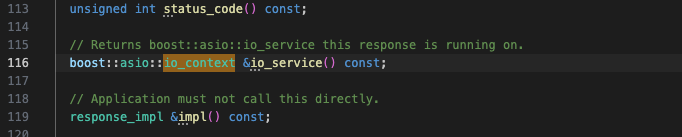

Simple REST API Implementation in C++ with nghttp2, jsoncpp¶
1. Requirements¶
Installed required libraries.
libnghttp2_asio, which has the header files we need, has been deprecated so we can no longer do it bybrew install nghttp2and then building from there. The library has moved to https://github.com/nghttp2/nghttp2-asio.
Because of the above reason, we will separately install nghttp-asio using vcpkg.
Install vcpkg first.
Install nghttp-asio using vcpkg.
Since nghttp2-asio was developed with an older version of Boost, compiling it with a newer Boost version will lead to an error stating that there is no member named io_service in the boost::asio namespace. This is because, in the updated Boost, io_service has been replaced by io_context. I used a bruteforce solution and replaced all occurrences of io_service with io_context in the header file we need, asio_http2_server.h .
For my setup, the file was located at $HOME/dvcpkg/installed/arm64-osx/include/nghttp2/asio_http2_server.h; I replaced a total of 2 occurrences.


2. Implement REST API Server¶
Since this is a simple example for practice, I won’t be adding any authentication logic. However, for actual usage, authentication (e.g., JWT, OAuth) is required.
Initial Setup¶
First I include all necessary headers and declare namespace.
#include <iostream>
#include <map>
#include <nghttp2/asio_http2_server.h>
#include <json/json.h>
using namespace nghttp2::asio_http2;
using namespace nghttp2::asio_http2::server;
I also created a map userData to store the userID and userName.
Then define getUserJson() function, which returns the user data in a JSON format. Basically it converts the userData map into a JSON array with jsoncpp.
Json::Value getUsersJson() {
Json::Value users(Json::arrayValue);
for (const auto &user : userData) {
Json::Value userJson;
userJson["id"] = user.first;
userJson["name"] = user.second;
users.append(userJson);
}
return users;
}
/*
will return:
[
{
"id": 753951,
"name": "Lyn"
},
{
"id": 574269,
"name": "Gojo"
}
]
*/
Setup the Server¶
In main(), I will insatiate 2 objects:
ecis an object that stores the server’s error while runningserveris our HTTP/2 object
We will test by defining a basic endpoint and starting the server on localhost:3000.
server.handle("/", [](const request &req, const response &res) {
res.write_head(200);
res.end("This is Lyn's Example! Hello, World :>\n");
});
if (server.listen_and_serve(ec, "localhost", "3000")) {
std::cerr << "error: " << ec.message() << std::endl;
}
Build and run the executable. I used a Makefile below.
CXX = g++
CXXFLAGS = -std=c++17 -Wall -Wextra -O2
INCLUDES = -I/opt/homebrew/include -I/$(VCPKG_ROOT)/installed/arm64-osx/include
LIBS = -L/opt/homebrew/lib -L/$(VCPKG_ROOT)/installed/arm64-osx/lib -lnghttp2 -lnghttp2_asio -lboost_system -ljsoncpp -lssl -lcrypto -lpthread
TARGET = server
SRCS = main.cpp
OBJS = $(SRCS:.cpp=.o)
all: $(TARGET) clean_obj
$(TARGET): $(OBJS)
$(CXX) $(CXXFLAGS) $(OBJS) -o $@ $(LIBS) $(INCLUDES)
%.o: %.cpp
$(CXX) $(CXXFLAGS) $(INCLUDES) -c $< -o $@
clean:
rm -f $(OBJS) $(TARGET)
clean_obj:
rm -f $(OBJS)
.PHONY: all clean
You can call the api with cURL command. Since nghttp2 uses HTTP/2, use the --http2-prior-knowledge option to make an HTTP/2 request.
The output should be:
Define /api/users Endpoint¶
Now define an actual endpoint for the api. My example API will have an /api/users endpoint where caller can make GET, PUT, POST requests.
server.handleis a call back function that process requests for the specified endpoint.[](const request &req, const response &res)is a lambda function that takes two arguments (resandreq) which processes the incoming request and sends an appropriate response.
Request Method Logic
if (req.method() == "GET") {
// GET logic
} else if (req.method() == "POST") {
// POST logic
} else {
// Not supported
}
req.method()returns the type of the request (GET, POST, PUT, DELETE)
Handling GET Requests
When the client sends a GET request to the /api/users endpoint, the server will respond by retrieving and returning the list of users (userData) in JSON format.
if (req.method() == "GET") {
Json::StreamWriterBuilder writer;
std::string jsonString = Json::writeString(writer, getUsersJson()) + "\n";
res.write_head(200);
res.end(jsonString);
}
- The
StreamWriterBuilderandJson::writeStringare used to convert the JSON object into a string. res.write_head(200)Sends an HTTP 200 OK response.res.end(jsonString)Sends the JSON data to the client.
To test the endpoint, use the following cURL command:
Output should be:
Handling POST Requests
The POST request allows adding a new user by specifying their id and name.
req.on_data([&res](const uint8_t *data, std::size_t len) {
std::string body(reinterpret_cast<const char *>(data), len);
Json::CharReaderBuilder reader;
Json::Value requestBody;
std::string errors;
std::istringstream iss(body);
if (Json::parseFromStream(reader, iss, &requestBody, &errors)) {
if (!(requestBody.isMember("name") && requestBody.isMember("id"))) {
res.write_head(404);
res.end("{\"error\": \"Key not found\"}\n");
} else {
int userID = requestBody["id"].asInt();
std::string userName = requestBody["name"].asString();
userData[userID] = userName;
Json::Value responseJson;
responseJson["message"] = "User added successfully";
responseJson["id"] = userID;
responseJson["name"] = userName;
Json::StreamWriterBuilder writer;
std::string jsonResponse = Json::writeString(writer, responseJson) + "\n";
res.write_head(201);
res.end(jsonResponse);
}
} else {
res.write_head(400);
res.end(R"({"error": "Invalid JSON"})");
}
}
- The server reads the raw body of the POST request using the
on_datacallback. (passes&resas a capture). - Then, the body is parsed using the
Json::parseFromStream()function.
You can test will cURL as well
(successful)
curl --http2-prior-knowledge -X POST http://localhost:3000/users -d '{"id":123456, "name":"Satoru"}'
(invalid key)
curl --http2-prior-knowledge -X POST http://localhost:3000/users -d '{"ids":123456, "names":"Satoru"}'
Handling Invalid Requests
When an invalid type of request was sent, the server will send an error message.
You can also test this with cURL:
Define /api/users/{userID} Endpoint¶
The /api/users/{userID} endpoint allows the server to handle user-specific requests, where {userID} is a dynamic path parameter representing the ID of the user. Caller can make GET, PUT, and DELETE requests for this endpoint.
The code is very similar to above.
server.handle("/users/", [](const request &req, const response &res) {
std::string path = req.uri().path;
std::string userIDStr = path.substr(path.find_last_of('/') + 1);
int userID = std::stoi(userIDStr);
if (req.method() == "GET") {
// curl --http2-prior-knowledge -X GET http://localhost:3000/users/753951
// curl --http2-prior-knowledge -X GET http://localhost:3000/users/000000
if (userData.find(userID) != userData.end()) {
Json::Value userJson;
userJson["id"] = userID;
userJson["name"] = userData[userID];
Json::StreamWriterBuilder writer;
std::string jsonString = Json::writeString(writer, userJson) + "\n";
res.write_head(200);
res.end(jsonString);
} else {
res.write_head(404);
res.end("{\"error\": \"User not found\"}\n");
}
} else if (req.method() == "PUT") {
// curl --http2-prior-knowledge -X PUT http://localhost:3000/users/753951 -d '{"name":"Lyn Jeong"}'
// curl --http2-prior-knowledge -X PUT http://localhost:3000/users/000000 -d '{"name":"Geto"}'
// curl --http2-prior-knowledge -X PUT http://localhost:3000/users/753951 -d '{"names":"Lyn Jeong"}'
req.on_data([&res, userID](const uint8_t *data, std::size_t len) {
std::string body(reinterpret_cast<const char *>(data), len);
Json::CharReaderBuilder reader;
Json::Value requestBody;
std::string errors;
std::istringstream iss(body);
if (Json::parseFromStream(reader, iss, &requestBody, &errors)) {
if (!requestBody.isMember("name")) {
res.write_head(404);
res.end("{\"error\": \"Key not found\"}\n");
} else {
if (userData.find(userID) != userData.end()) {
userData[userID] = requestBody["name"].asString();
Json::Value responseJson;
responseJson["message"] = "User updated successfully";
responseJson["id"] = userID;
responseJson["name"] = userData[userID];
Json::StreamWriterBuilder writer;
std::string jsonResponse = Json::writeString(writer, responseJson) + "\n";
res.write_head(200);
res.end(jsonResponse);
} else {
res.write_head(404);
res.end("{\"error\": \"User not found\"}\n");
}
}
} else {
res.write_head(400);
res.end(R"({"error": "Invalid JSON"})");
}
});
} else if (req.method() == "DELETE") {
// curl --http2-prior-knowledge -X DELETE http://localhost:3000/users/753951
// curl --http2-prior-knowledge -X DELETE http://localhost:3000/users/000000
if (userData.find(userID) != userData.end()) {
std::string userName = userData[userID];
if (userData.erase(userID) > 0) {
res.write_head(200);
res.end("{\"message\": \"User " + userName + " deleted successfully\"}\n");
} else {
res.write_head(404);
res.end("{\"error\": \"Failed to delete " + userName + "\"}\n");
}
} else {
res.write_head(404);
res.end("{\"error\": \"User not found\"}\n");
}
} else {
// curl --http2-prior-knowledge -X POST http://localhost:3000/users/753951 -d '{"id":789012, "name":"Geto"}'
res.write_head(405);
res.end("{\"error\": \"Method not allowed\"}\n");
}
});
3. API Endpoint Summary¶
The API has two main endpoints for managing users: /api/users and /api/users/{userID}.
| Endpoint | Method | Description | Example cURL Command |
|---|---|---|---|
/api/users |
GET | Retrieve all users as a JSON array. | curl --http2-prior-knowledge -X GET <http://localhost:3000/api/users |
| POST | Add a new user with id and name. |
curl --http2-prior-knowledge -X POST <http://localhost:3000/api/users> -d '{"id":123456, "name":"Satoru"}' |
|
/api/users/{userID} |
GET | Retrieve a specific user by userID. |
curl --http2-prior-knowledge -X GET <http://localhost:3000/users/753951 |
| PUT | Update the user’s name by userID. |
curl --http2-prior-knowledge -X PUT <http://localhost:3000/users/753951> -d '{"name":"Lyn Jeong"}' |
|
| DELETE | Remove a specific user by userID. |
curl --http2-prior-knowledge -X DELETE <http://localhost:3000/users/753951 |
|
| Any unsupported method | Any | Return 405 Method Not Allowed error. |
— |